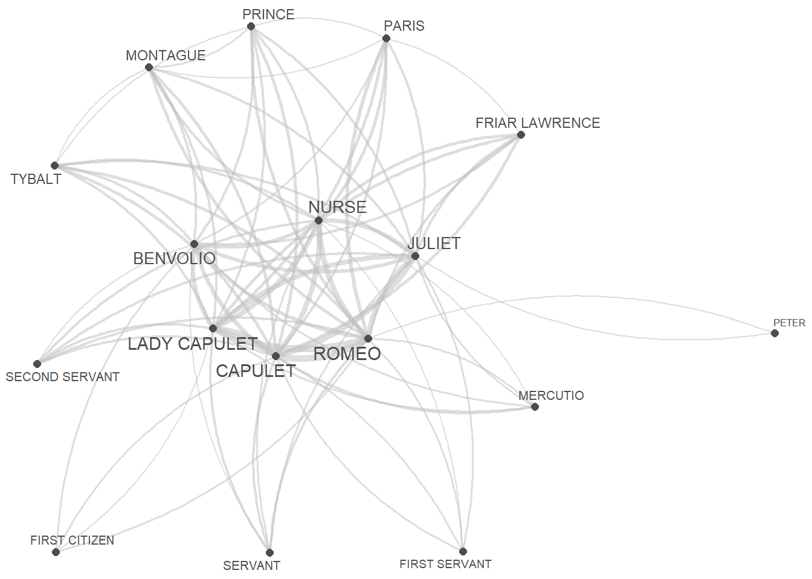

Network Analysis using R
Martin Schweinberger
2024-03-02

Introduction

This tutorial serves as an introduction to network analysis using R, a powerful method for visualizing relationships among various elements, such as authors, characters, or words. Network analysis goes beyond mere visualization; it’s a technique for uncovering patterns and structures within complex systems. In essence, network analysis represents relationships as nodes (elements) connected by edges (relationships) which provides a unique perspective for understanding the connections and interactions within your data.
Geared towards beginners and intermediate users of R, this tutorial aims to showcase how to perform network analysis based on textual data and it shows how to visualize networks using R. The primary goal is not to deliver a fully-fledged analysis but rather to demonstrate and exemplify selected useful methods associated with network analysis. This tutorial delves into creating and modifying network graphs, allowing users to explore and compare their statistical properties. By the end, you’ll not only grasp the basics of network analysis but also gain insights into leveraging statistical measures for a more comprehensive understanding of your data.
The entire R markdown document for the sections below can be downloaded
here. If you
want to render the Rmarkdown notebook on your machine, i.e. knitting the
document to a html or pdf file, you need to make sure that you have R
installed and you also need to download the bibliography
file and store it in the same folder where you store the Rmd
file.

Click
this link to open an interactive version of this tutorial on
MyBinder.org.
This interactive Jupyter notebook allows
you to execute code yourself and you can also change and edit the
notebook, e.g. you can change code and upload your own data.
This tutorial builds on a tutorial on plotting collocation networks by Guillaume Desagulier, a tutorial on network analysis by offered by Alice Miller from the Digital Observatory at the Queensland University of Technology, and this tutorial by Andreas Niekler and Gregor Wiedemann.
What is Network Analysis?
The most common way to visualize relationships between entities is through networks (Silge and Robinson 2017, 131–37). Networks, also known as graphs, are powerful tools that represent relationships among entities. They consist of nodes (often depicted as dots) and edges (typically represented as lines) and can be categorized as directed or undirected networks.
- In directed networks, the direction of edges is captured,
signifying the flow or relationship from one node to another. An example
of a directed network is the trade relationships between countries,
where arrows on the edges indicate the direction of exports. The
thickness of these arrows can also encode additional information, such
as the frequency or strength of the relationship.
- Undirected networks, on the other hand, represent symmetric relationships where the connection between two nodes is mutual. For example, in a social network, the connections between individuals are often undirected, as the relationship between friends is reciprocal.
Network analysis involves exploring the structure and properties of these networks. One key concept is centrality, which identifies the most important nodes in a network. Centrality metrics, such as degree centrality (number of connections) and betweenness centrality (importance in connecting other nodes), help unveil the significance of specific nodes.
Community detection is another aspect of network analysis that identifies groups or communities within a network, revealing substructures and relationships. Additionally, network analysis allows for the examination of clustering coefficients, which measure the tendency of nodes to form tightly-knit groups.
In R, there are several packages that provide essential tools for constructing, analyzing, and visualizing networks. By showcasing different options for generating and analyzing networks, users can gain valuable insights into the patterns, connections, and statistical properties within their data. As you explore network analysis, keep in mind that the field offers a rich array of methods and metrics tailored to address various research questions and objectives.
The example that we will be concerned with focuses on the first type of data as it is by far the most common way in which relationships are coded.To show how to create a network, we will have a look at the network that the characters in William Shakespeare’s Romeo and Juliet form.
Preparation and session set up
Certainly! Here’s a corrected and improved version of the passage:
This tutorial is built with and uses R (the R programming language). If you haven’t installed R or are new to it, you can find an introduction and more information on how to use R here. In order to execute the scripts and code chunks presented in this tutorial without errors, we need to install specific packages from the R library. Prior to delving into the code below, please install the required packages by running the code provided in this paragraph. If you’ve already installed the mentioned packages, feel free to skip ahead and disregard this section. To install the necessary packages, execute the following code. Note that it may take some time (between 1 and 5 minutes) to install all the libraries, so don’t worry if it takes a little while.
# install packages
install.packages("flextable")
install.packages("GGally")
install.packages("ggraph")
install.packages("igraph")
install.packages("Matrix")
install.packages("network")
install.packages("quanteda")
install.packages("sna")
install.packages("tidygraph")
install.packages("tidyverse")
install.packages("tm")
install.packages("tibble")
install.packages("quanteda.textplots")
# install klippy for copy-to-clipboard button in code chunks
install.packages("remotes")
remotes::install_github("rlesur/klippy")Next, we load the packages.
# activate packages
library(flextable)
library(GGally)
library(ggraph)
library(gutenbergr)
library(igraph)
library(Matrix)
library(network)
library(quanteda)
library(sna)
library(tidygraph)
library(tidyverse)
library(tm)
library(tibble)
# activate klippy for copy-to-clipboard button
klippy::klippy()Once you have installed R, RStudio, and have also initiated the session by executing the code shown above, you are good to go.
Data preparation
In network analysis, it’s crucial to have at least one table indicating the start and end points of edges (lines connecting nodes). Additionally, two additional tables providing information on node size/type and edge size/type are valuable. In the upcoming sections, we’ll create these tables from raw data. Alternatively, you can generate network graphs by uploading tables containing the necessary information.
We’ll generate a network showing the frequency of characters in William Shakespeare’s Romeo and Juliet appearing in the same scene. Our focus is on investigating the networks of personas in Shakespeare’s Romeo and Juliet, and thus, we’ll load this renowned work of fiction.
Creating a matrix
We start by loading the data which represents a table that contains the personas that are present during a sub-scene.
# load data
rom <- read.delim("https://slcladal.github.io/data/romeo_tidy.txt", sep = "\t")actscene | person | contrib | occurrences |
|---|---|---|---|
ACT I_SCENE I | BENVOLIO | 24 | 7 |
ACT I_SCENE I | CAPULET | 2 | 9 |
ACT I_SCENE I | FIRST CITIZEN | 1 | 2 |
ACT I_SCENE I | LADY CAPULET | 1 | 10 |
ACT I_SCENE I | MONTAGUE | 6 | 3 |
ACT I_SCENE I | PRINCE | 1 | 3 |
ACT I_SCENE I | ROMEO | 16 | 14 |
ACT I_SCENE I | TYBALT | 2 | 3 |
ACT I_SCENE II | BENVOLIO | 5 | 7 |
ACT I_SCENE II | CAPULET | 3 | 9 |
ACT I_SCENE II | PARIS | 2 | 5 |
ACT I_SCENE II | ROMEO | 11 | 14 |
ACT I_SCENE II | SERVANT | 8 | 3 |
ACT I_SCENE III | JULIET | 5 | 11 |
ACT I_SCENE III | LADY CAPULET | 11 | 10 |
We now transform that table into a co-occurrence matrix.
rome <- crossprod(table(rom[1:2]))
diag(rome) <- 0
romeo <- as.data.frame(rome)Persona | BALTHASAR | BENVOLIO | CAPULET | FIRST CITIZEN | FIRST SERVANT |
|---|---|---|---|---|---|
BALTHASAR | 0 | 0 | 1 | 0 | 0 |
BENVOLIO | 0 | 0 | 3 | 2 | 1 |
CAPULET | 1 | 3 | 0 | 1 | 2 |
FIRST CITIZEN | 0 | 2 | 1 | 0 | 0 |
FIRST SERVANT | 0 | 1 | 2 | 0 | 0 |
The data shows how often a character has appeared with each other character in the play - only Friar Lawrence and Friar John were excluded because they only appear in one scene where they talk to each other.
Network Visualization
There are various different ways to visualize a network structure. We will focus on two packages for network visualization here and exemplify how you can visualize networks in R.
Quanteda Networks
The quanteda package contains many very useful functions
for analyzing texts. Among these functions is the
textplot_network function which provides a very handy way
to display networks. The advantage of the network plots provided by or
generated with the quanteda package is that you can create
them with very little code. However, this comes at a cost as these
visualizations cannot be modified easily (which means that their design
is not very flexible compared to other methods for generating network
visualizations).
In a first step, we transform the text vectors of the
romeo data into a document-feature matrix using the
dfm function.
# create a document feature matrix
romeo_dfm <- quanteda::as.dfm(romeo)
# create feature co-occurrence matrix
romeo_fcm <- quanteda::fcm(romeo_dfm)
# inspect data
head(romeo_fcm)## Feature co-occurrence matrix of: 6 by 18 features.
## features
## features BALTHASAR BENVOLIO CAPULET FIRST CITIZEN FIRST SERVANT
## BALTHASAR 1 25 31 11 6
## BENVOLIO 0 39 93 39 27
## CAPULET 0 0 65 42 39
## FIRST CITIZEN 0 0 0 6 10
## FIRST SERVANT 0 0 0 0 3
## FRIAR LAWRENCE 0 0 0 0 0
## features
## features FRIAR LAWRENCE JULIET LADY CAPULET MERCUTIO MONTAGUE
## BALTHASAR 20 26 31 11 17
## BENVOLIO 53 87 99 42 55
## CAPULET 74 131 117 52 65
## FIRST CITIZEN 18 32 36 24 29
## FIRST SERVANT 17 40 42 12 15
## FRIAR LAWRENCE 15 61 72 23 32
## [ reached max_nfeat ... 8 more features ]This feature-co-occurrence matrix can then serve as the input for the
textplot_network function which already generates a nice
network graph. The network graph can then be modified or customized
easily by defining the arguments of the textplot_network
function. To see how and which arguments can be modified, you can use
?textplot_network.
quanteda.textplots::textplot_network(romeo_fcm,
min_freq = .5,
edge_alpha = 0.5,
edge_color = "purple",
vertex_labelsize = log(rowSums(romeo_fcm)),
edge_size = 2)
WE now turn to generating tidy networks with is more complex but also offers more flexibility and options for customization.
Tidy Networks
A great way to generate network graphs is to combine functions from
the igraph, the ggraph, and the
tidygraph packages. The advantages are that the syntax of
for creating the networks aligns with the tidyverse style of writing R
and that the graphs can be modified very easily.
To generate network graphs in this way, we define the nodes and we can also add information about the odes that we can use later on (such as frequency information).
va <- romeo %>%
dplyr::mutate(Persona = rownames(.),
Occurrences = rowSums(.)) %>%
dplyr::select(Persona, Occurrences) %>%
dplyr::filter(!str_detect(Persona, "SCENE"))Persona | Occurrences |
|---|---|
BALTHASAR | 9 |
BENVOLIO | 34 |
CAPULET | 46 |
FIRST CITIZEN | 14 |
FIRST SERVANT | 12 |
FRIAR LAWRENCE | 20 |
JULIET | 36 |
LADY CAPULET | 45 |
MERCUTIO | 15 |
MONTAGUE | 22 |
NURSE | 38 |
PARIS | 21 |
PETER | 9 |
PRINCE | 22 |
ROMEO | 54 |
SECOND SERVANT | 16 |
SERVANT | 15 |
TYBALT | 22 |
Now, we define the edges, i.e., the connections between nodes and, again, we can add information in separate variables that we can use later on.
ed <- romeo %>%
dplyr::mutate(from = rownames(.)) %>%
tidyr::gather(to, Frequency, BALTHASAR:TYBALT) %>%
dplyr::mutate(Frequency = ifelse(Frequency == 0, NA, Frequency))from | to | Frequency |
|---|---|---|
BALTHASAR | BALTHASAR | |
BENVOLIO | BALTHASAR | |
CAPULET | BALTHASAR | 1 |
FIRST CITIZEN | BALTHASAR | |
FIRST SERVANT | BALTHASAR | |
FRIAR LAWRENCE | BALTHASAR | 1 |
JULIET | BALTHASAR | 1 |
LADY CAPULET | BALTHASAR | 1 |
MERCUTIO | BALTHASAR | |
MONTAGUE | BALTHASAR | 1 |
NURSE | BALTHASAR | |
PARIS | BALTHASAR | 1 |
PETER | BALTHASAR | |
PRINCE | BALTHASAR | 1 |
ROMEO | BALTHASAR | 2 |
Now that we have generated tables for the edges and the nodes, we can generate a graph object.
ig <- igraph::graph_from_data_frame(d=ed, vertices=va, directed = FALSE)We will also add labels to the nodes as follows:
tg <- tidygraph::as_tbl_graph(ig) %>%
tidygraph::activate(nodes) %>%
dplyr::mutate(label=name)When we now plot our network, it looks as shown below.
# set seed
set.seed(12345)
# edge size shows frequency of co-occurrence
tg %>%
ggraph(layout = "fr") +
geom_edge_arc(colour= "gray50",
lineend = "round",
strength = .1,
alpha = .1) +
geom_node_text(aes(label = name),
repel = TRUE,
point.padding = unit(0.2, "lines"),
colour="gray10") +
theme_graph(background = "white") +
guides(edge_width = FALSE,
edge_alpha = FALSE)
Now, we use the number of occurrences to define vertex size (or node size): the more often a character appears, the bigger it will appear in the graph.
v.size <- V(tg)$Occurrences
# inspect
v.size## <NA> <NA> <NA> <NA> <NA> <NA> <NA> <NA> <NA> <NA> <NA> <NA> <NA> <NA> <NA> <NA>
## 9 34 46 14 12 20 36 45 15 22 38 21 9 22 54 16
## <NA> <NA>
## 15 22When we include this into our network, it looks as shown below.
# set seed
set.seed(12345)
# edge size shows frequency of co-occurrence
tg %>%
ggraph(layout = "fr") +
geom_edge_arc(colour= "gray50",
lineend = "round",
strength = .1) +
geom_node_point(size=log(v.size)*2) +
geom_node_text(aes(label = name),
repel = TRUE,
point.padding = unit(0.2, "lines"),
size=sqrt(v.size),
colour="gray10") +
scale_edge_width(range = c(0, 2.5)) +
scale_edge_alpha(range = c(0, .3)) +
theme_graph(background = "white") +
guides(edge_width = FALSE,
edge_alpha = FALSE)
Next, we modify the edges by using frequency information to define weights: the more often two characters appear in the same scene, the bigger the edge.
E(tg)$weight <- E(tg)$Frequency
# inspect weights
head(E(tg)$weight, 10)## [1] NA NA 1 NA NA 1 1 1 NA 1When we include this into our network, it looks as shown below.
# set seed
set.seed(12345)
# edge size shows frequency of co-occurrence
tg %>%
ggraph(layout = "fr") +
geom_edge_arc(colour= "gray50",
lineend = "round",
strength = .1,
aes(edge_width = weight,
alpha = weight)) +
geom_node_point(size=log(v.size)*2) +
geom_node_text(aes(label = name),
repel = TRUE,
point.padding = unit(0.2, "lines"),
size=sqrt(v.size),
colour="gray10") +
scale_edge_width(range = c(0, 2.5)) +
scale_edge_alpha(range = c(0, .3)) +
theme_graph(background = "white") +
theme(legend.position = "top") +
guides(edge_width = FALSE,
edge_alpha = FALSE)
Finally, we define colors so that characters belonging to the same family have the same color.
# define colors (by family)
mon <- c("ABRAM", "BALTHASAR", "BENVOLIO", "LADY MONTAGUE", "MONTAGUE", "ROMEO")
cap <- c("CAPULET", "CAPULET’S COUSIN", "FIRST SERVANT", "GREGORY", "JULIET", "LADY CAPULET", "NURSE", "PETER", "SAMPSON", "TYBALT")
oth <- c("APOTHECARY", "CHORUS", "FIRST CITIZEN", "FIRST MUSICIAN", "FIRST WATCH", "FRIAR JOHN" , "FRIAR LAWRENCE", "MERCUTIO", "PAGE", "PARIS", "PRINCE", "SECOND MUSICIAN", "SECOND SERVANT", "SECOND WATCH", "SERVANT", "THIRD MUSICIAN")
# create color vectors
Family <- dplyr::case_when(sapply(tg, "[")$nodes$name %in% mon ~ "MONTAGUE",
sapply(tg, "[")$nodes$name %in% cap ~ "CAPULET",
TRUE ~ "Other")
# inspect colors
Family## [1] "MONTAGUE" "MONTAGUE" "CAPULET" "Other" "CAPULET" "Other"
## [7] "CAPULET" "CAPULET" "Other" "MONTAGUE" "CAPULET" "Other"
## [13] "CAPULET" "Other" "MONTAGUE" "Other" "Other" "CAPULET"Now, that we have created the different objects and defined their properties, we can finally visualize the finished network.
# set seed
set.seed(12345)
# edge size shows frequency of co-occurrence
tg %>%
ggraph(layout = "fr") +
geom_edge_arc(colour= "gray50",
lineend = "round",
strength = .1,
aes(edge_width = weight,
alpha = weight)) +
geom_node_point(size=log(v.size)*2,
aes(color=Family)) +
geom_node_text(aes(label = name),
repel = TRUE,
point.padding = unit(0.2, "lines"),
size=sqrt(v.size),
colour="gray10") +
scale_edge_width(range = c(0, 2.5)) +
scale_edge_alpha(range = c(0, .3)) +
theme_graph(background = "white") +
theme(legend.position = "top") +
guides(edge_width = FALSE,
edge_alpha = FALSE)
iGraph Networks
Wiedemann and Niekler (2017) have written a very recommendable
tutorial on co-occurrence analysis and they propose an alternative for
generating complex network visualization for co-occurrences. Their
approach is to create and customize a graph object based on the
iGraph package. To see how to create sophisticated network
graphs using the iGraph package, see this tutorial on
analyzing collocations or this
tutorial.
Network Statistics
In addition to visualizing networks, we will analyze the network and extract certain statistics about the network that tell us about structural properties of networks. In the present case, we will extract
To extract the statistics, we use the edge object generated above
(called ed) and remove all rows that contain missing values
(NA) and then repeat each combination as often as it
occurred based on the value in the Frequency column.
dg <- ed %>%
tidyr::drop_na()
dg <- dg[rep(seq_along(dg$Frequency), dg$Frequency), 1:2]
rownames(dg) <- NULLThe resulting object (dg) looks as shown below.
from | to |
|---|---|
CAPULET | BALTHASAR |
FRIAR LAWRENCE | BALTHASAR |
JULIET | BALTHASAR |
LADY CAPULET | BALTHASAR |
MONTAGUE | BALTHASAR |
PARIS | BALTHASAR |
PRINCE | BALTHASAR |
ROMEO | BALTHASAR |
ROMEO | BALTHASAR |
CAPULET | BENVOLIO |
CAPULET | BENVOLIO |
CAPULET | BENVOLIO |
FIRST CITIZEN | BENVOLIO |
FIRST CITIZEN | BENVOLIO |
FIRST SERVANT | BENVOLIO |
We now generate an edge list from the dg object and then
extract the degree centrality of all edges in the
dg object by using the degree function from
the igraph package. The degree centrality reflects
the counts of how many edges each node has. The most central node is the
one with with the highest value of ties.
dgg <- graph.edgelist(as.matrix(dg), directed = T)
# extract degree centrality
igraph::degree(dgg) ## CAPULET BALTHASAR FRIAR LAWRENCE JULIET LADY CAPULET
## 92 18 40 72 90
## MONTAGUE PARIS PRINCE ROMEO BENVOLIO
## 44 42 44 108 68
## FIRST CITIZEN FIRST SERVANT MERCUTIO NURSE PETER
## 28 24 30 76 18
## SECOND SERVANT SERVANT TYBALT
## 32 30 44To extract the most central node, we can use the max()
function to extract the name of the node with the most edges.
names(igraph::degree(dgg))[which(igraph::degree(dgg) == max(igraph::degree(dgg)))]## [1] "ROMEO"We now extract the betweenness centrality of all edges in
the dg object by using the betweenness
function from the igraph package. Betweenness
centrality reflects how connected nodes are. More precisely, it
provides a measure of how important noes are for information flow
between nodes in a network. The node with the highest betweenness
centrality creates the shortest paths in the network. For any two nodes
we can find the shortest path, i.e. the path with the lowest number of
steps that are necessary to get from the node A to node B. If a node C
facilitates the shortest path between A and B, then it means C is
important to the efficient flow of information between A and B.
Thus, betweenness effectively counts how many shortest paths each node is on. The higher a node’s betweenness, the more important they are for the efficient flow of goods in a network.
igraph::betweenness(dgg)## CAPULET BALTHASAR FRIAR LAWRENCE JULIET LADY CAPULET
## 15.62321868 0.00000000 1.09118044 5.55471008 16.27686423
## MONTAGUE PARIS PRINCE ROMEO BENVOLIO
## 2.18220323 1.85942942 2.18220323 27.62437026 9.61512099
## FIRST CITIZEN FIRST SERVANT MERCUTIO NURSE PETER
## 0.03846154 0.00000000 0.84421390 7.40145363 0.26841707
## SECOND SERVANT SERVANT TYBALT
## 0.00000000 0.23874480 3.19940849To extract the most central node, we can use the max()
function to extract the name of the node with the most edges.
names(igraph::betweenness(dgg))[which(igraph::betweenness(dgg) == max(igraph::betweenness(dgg)))]## [1] "ROMEO"In addition, we extract the closeness statistic of all edges in the
dg object by using the closeness function from
the igraph package. Closeness centrality refers to the
shortest paths between nodes. The distance between two nodes represents
the length of the shortest path between them. The closeness of a node is
the average distance from that node to all other nodes.
igraph::closeness(dgg)## CAPULET BALTHASAR FRIAR LAWRENCE JULIET LADY CAPULET
## 0.05555556 0.03846154 0.04166667 0.05000000 0.05882353
## MONTAGUE PARIS PRINCE ROMEO BENVOLIO
## 0.04545455 0.04545455 0.04545455 0.05882353 0.05263158
## FIRST CITIZEN FIRST SERVANT MERCUTIO NURSE PETER
## 0.03846154 0.04000000 0.04000000 0.04761905 0.03846154
## SECOND SERVANT SERVANT TYBALT
## 0.04000000 0.04166667 0.04761905To extract the node with the highest closeness, we can use the
max() function to extract the name of the node with the
most edges.
names(igraph::closeness(dgg))[which(igraph::closeness(dgg) == max(igraph::closeness(dgg)))]## [1] "LADY CAPULET" "ROMEO"We have reached the end of this tutorial and you now know how to create and modify networks in R and how you can highlight aspects of your data.
Citation & Session Info
Schweinberger, Martin. 2024. Network Analysis using R. Brisbane: The University of Queensland. url: https://ladal.edu.au/net.html (Version 2024.03.02).
@manual{schweinberger2024net,
author = {Schweinberger, Martin},
title = {Network Analysis using R},
note = {https://ladal.edu.au/net.html},
year = {2024},
organization = "The University of Queensland, Australia. School of Languages and Cultures},
address = {Brisbane},
edition = {2024.03.02}
}sessionInfo()## R version 4.3.2 (2023-10-31 ucrt)
## Platform: x86_64-w64-mingw32/x64 (64-bit)
## Running under: Windows 11 x64 (build 22621)
##
## Matrix products: default
##
##
## locale:
## [1] LC_COLLATE=English_Australia.utf8 LC_CTYPE=English_Australia.utf8
## [3] LC_MONETARY=English_Australia.utf8 LC_NUMERIC=C
## [5] LC_TIME=English_Australia.utf8
##
## time zone: Australia/Brisbane
## tzcode source: internal
##
## attached base packages:
## [1] stats graphics grDevices utils datasets methods base
##
## other attached packages:
## [1] tm_0.7-11 NLP_0.2-1 lubridate_1.9.3
## [4] forcats_1.0.0 stringr_1.5.1 dplyr_1.1.4
## [7] purrr_1.0.2 readr_2.1.5 tidyr_1.3.1
## [10] tibble_3.2.1 tidyverse_2.0.0 tidygraph_1.3.1
## [13] sna_2.7-2 statnet.common_4.9.0 quanteda_3.3.1
## [16] network_1.18.2 Matrix_1.6-5 igraph_2.0.2
## [19] gutenbergr_0.2.4 ggraph_2.2.0 GGally_2.2.1
## [22] ggplot2_3.5.0 flextable_0.9.4
##
## loaded via a namespace (and not attached):
## [1] gridExtra_2.3 rlang_1.1.3
## [3] magrittr_2.0.3 compiler_4.3.2
## [5] systemfonts_1.0.5 vctrs_0.6.5
## [7] httpcode_0.3.0 pkgconfig_2.0.3
## [9] crayon_1.5.2 fastmap_1.1.1
## [11] ellipsis_0.3.2 labeling_0.4.3
## [13] utf8_1.2.4 promises_1.2.1
## [15] rmarkdown_2.25 tzdb_0.4.0
## [17] ragg_1.2.7 xfun_0.42
## [19] cachem_1.0.8 jsonlite_1.8.8
## [21] highr_0.10 later_1.3.2
## [23] uuid_1.2-0 tweenr_2.0.3
## [25] parallel_4.3.2 stopwords_2.3
## [27] R6_2.5.1 bslib_0.6.1
## [29] stringi_1.8.3 RColorBrewer_1.1-3
## [31] jquerylib_0.1.4 assertthat_0.2.1
## [33] Rcpp_1.0.12 knitr_1.45
## [35] klippy_0.0.0.9500 httpuv_1.6.14
## [37] timechange_0.3.0 tidyselect_1.2.0
## [39] rstudioapi_0.15.0 yaml_2.3.8
## [41] viridis_0.6.5 curl_5.2.0
## [43] lattice_0.21-9 plyr_1.8.9
## [45] shiny_1.8.0 withr_3.0.0
## [47] askpass_1.2.0 coda_0.19-4.1
## [49] evaluate_0.23 ggstats_0.5.1
## [51] RcppParallel_5.1.7 polyclip_1.10-6
## [53] zip_2.3.1 xml2_1.3.6
## [55] pillar_1.9.0 generics_0.1.3
## [57] hms_1.1.3 munsell_0.5.0
## [59] scales_1.3.0 xtable_1.8-4
## [61] quanteda.textplots_0.94.4 slam_0.1-50
## [63] glue_1.7.0 gdtools_0.3.6
## [65] tools_4.3.2 gfonts_0.2.0
## [67] data.table_1.15.2 graphlayouts_1.1.0
## [69] fastmatch_1.1-4 grid_4.3.2
## [71] colorspace_2.1-0 ggforce_0.4.2
## [73] cli_3.6.2 textshaping_0.3.7
## [75] officer_0.6.5 fontBitstreamVera_0.1.1
## [77] fansi_1.0.6 viridisLite_0.4.2
## [79] gtable_0.3.4 sass_0.4.8
## [81] digest_0.6.34 fontquiver_0.2.1
## [83] ggrepel_0.9.5 crul_1.4.0
## [85] farver_2.1.1 memoise_2.0.1
## [87] htmltools_0.5.7 lifecycle_1.0.4
## [89] mime_0.12 fontLiberation_0.1.0
## [91] openssl_2.1.1 MASS_7.3-60